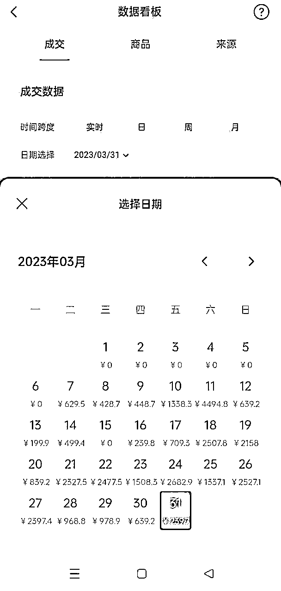
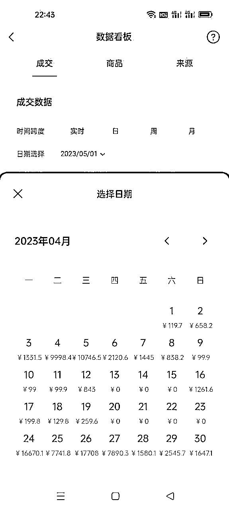
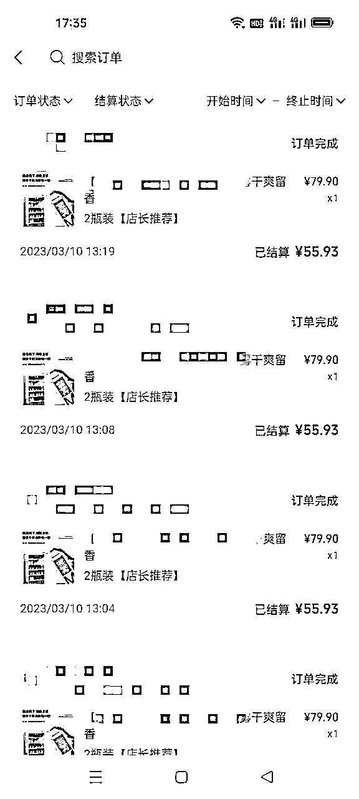
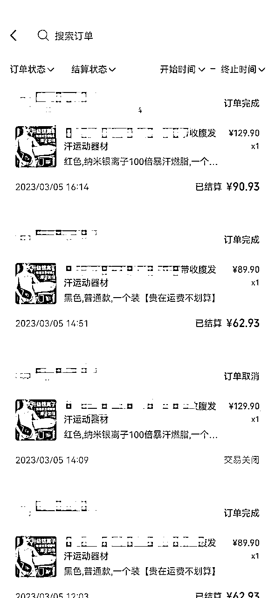
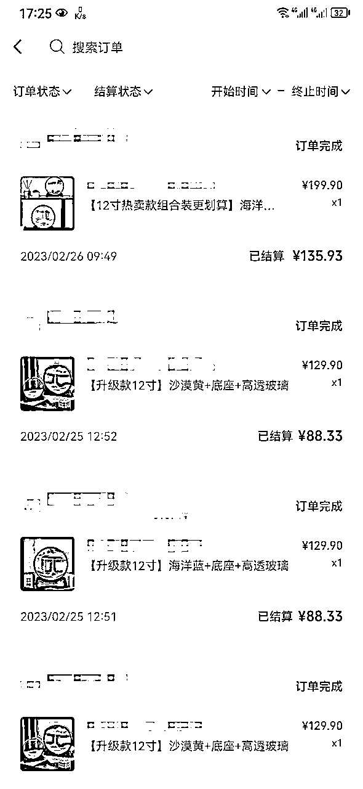
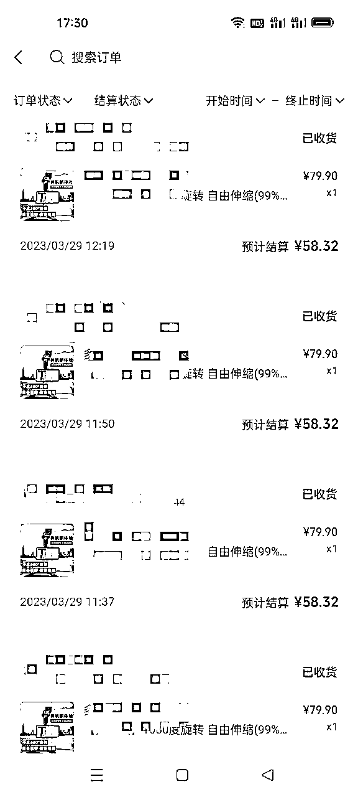
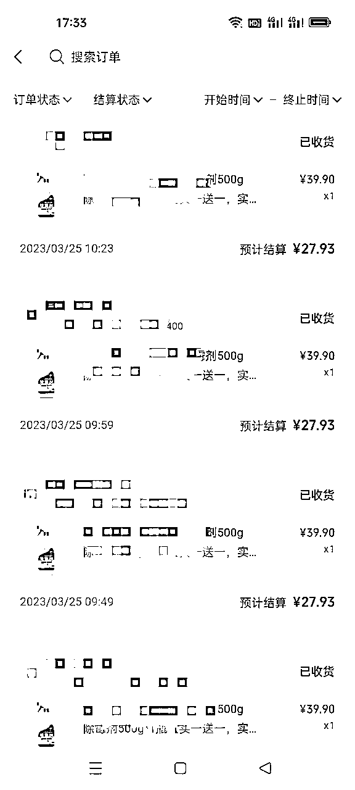
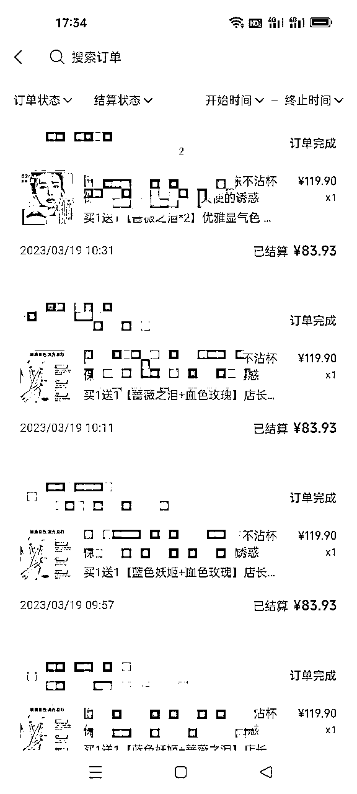
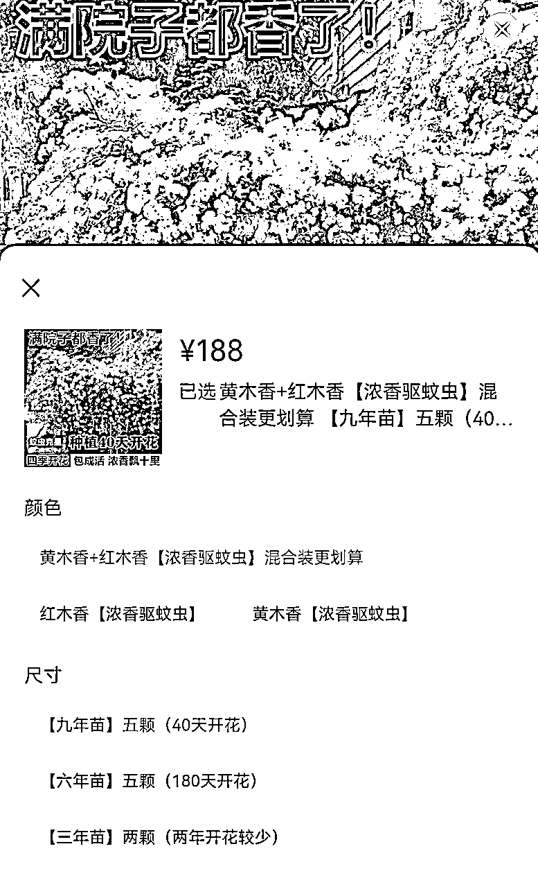
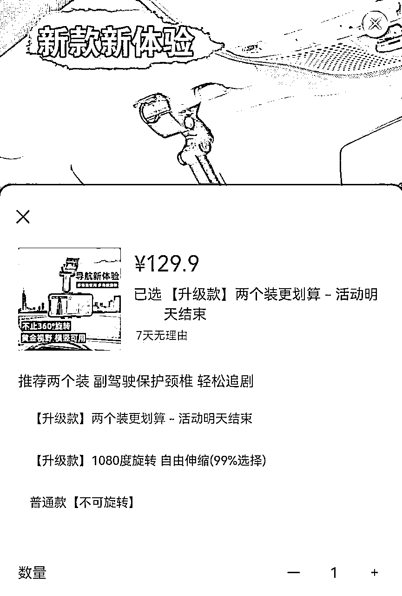

来源：https://md8vbz6pkh.feishu.cn/docx/AxQ8duaITowcrCx54hocWSy4nnb
大家好，我是纸壳，过往经历没什么值得说的，踩过风口也摔过跟头。目前专注做视频号带货，自然流、直播、付费都做过，该踩的坑一个没少。
相信做过视频号的朋友，都有感受到年后视频号的整个环境发生了很大变化。甚至现在每天都有新变化。给我的感受是，视频号正在快速迭代，为之后的放量做准备。前段时间传言下半年开放视频号一级入口，虽然后来辟谣了，但是只要微信愿意，完全有能力在短时间内给视频号更大的流量。(微信搜索已经可以直接搜出视频号带货内容了)
所以说视频号真正的爆发期还没到，现在正是入局者们向下扎根的时候，和平台一起成长，等到视频号放量才有能力抓住机会，在平台占据一席之地。
从去年7月份入局视频号到现在快一年了，一直专注在这一个平台，大大小小的坑踩了无数，说下我对于目前视频号几种玩法的认知
缺点是，操作难度和复杂度比自然流高，测品过程需要投钱，没掌握方法的话会亏钱；门槛高，挂车短视频不投流没有流量，钱生钱的项目，钱多吃肉，钱少喝汤，没钱玩不了。
关于自然流和直播，当然有人在这两个领域做的很好，但是对于复制新号来说成功概率太低，操作体验来看远不如挂车付费友好。
参考抖音的发展历程，付费是可以穿越平台各时期的玩法，不论规则如何变化，投流的底层逻辑不变，无非就是玩法细节调整。而且以各平台的经验看，付费玩法是终极赛道，值得入局。
玩法跑通之后，一直有朋友找我了解投流玩法，今天就分享一下，付费玩法的全流程。
首先看数据，下面截图是3月5号注册的新号，测试方法一个月，陆陆续续卖了3w+，中间赶上315，灰暗的一周，一度怀疑方法不行。过完315流量恢复，玩法细节逐渐跑通，每天卖2000+。
4月份小放量，卖8w+，净利润30%，至此全流程跑通，可复制可放大。目前正在复制新号，做一号一品类，高利润品roi1.2保本，基本能打到1.8-2.0，非常稳定。


出于篇幅考虑，太基础的内容就不写了，不明白的去看航海手册，肯定比我讲的细。
以团队为例，3-6人为一组，每人准备5台安卓手机，每台手机微信多开，可支持15个帐号，批量测品和素材，每个号只做同类目产品。每三个组安排一名投手，不剪视频只负责投流，投手一定要有流量敏感度。
这个玩法的核心是多测品和素材，一天测7个品和70个品赚的肯定不一样多，所以想赚大的就必须搞团队。我知道的几个头部团队，每天测70-100个品，基本保证每周甚至每天都有爆品。
选品方法之前有很多圈友分享过，大家也各有各的方法，都很有效。说一下投流玩法的选品要求，目前主要是做高客单，要求利润率在70%以上，不然很难覆盖投流成本，所以选品主打新奇特、高溢价。但是黑五类和功效品做不了，过不了审，过了也不消耗。给大家看一下我之前打爆的几个品，都是70%以上利润。(最新，低客单也跑起来了)






给大家提供几个选品思路


选素材：抖音快手搬运，提高效率。用多个账号，不同类型素材（好物分享、科普、测评），测试这个品的roi。尽量选有讲解的素材，转化好
处理素材：采集软件解决MD5问题，剪映和CR解决搬运问题，消重软件解决不过审问题。关于素材处理，之前有老师分享过方法，非常好用且高效，大家好好学，这里就不多讲了。
品和素材的重要性占爆品要素的70%以上，投放技巧占比不超过30%。在我们测试过程中遇到的90%问题，不过审不消耗转化低等，各种测试后，发现都是品和素材导致的。所以虽然这部分篇幅不多，但想要做好这个玩法，品和素材如何重视都不为过。
测品分1测和2测，1测主要看品能不能出单，2测主要测性价比最高的计划出价。
1000豆，6小时，出价900，其他都不选，看是否出单以及roi。能出单，但是roi不够，调整价格进行二测；不能出单，直接pass，如果对这个品有执念，换素材再试，多个素材反应都差，不要犹豫pass。做投流不要相信感觉，而要相信数据。
2000豆，搭建4-10条计划，出价比一测依次降低50豆，850、800、750、700，看roi、消耗、测合适流速的出价。主要测试能否放动量，不能放量的品没意义。
放量阶段是主要的利润来源，很多细节要做好
挂车投流这个玩法呢，真的是目前视频号平台最稳定的模式了。理论上从个人到团队都能做，无非就是赚多赚少。当然如果什么都不会，盲目去做，确实对小团队又不太友好，什么都不懂进来可能先亏个几千到几万。
所以小团队，尽量先多跟品，跑通流程再放量。成熟团队就尽快入局吧，这个玩法能拿到大结果的。
而且还有很多衍生的玩法，比如自然流爆的品，能不能用付费抢量；相反，投流打爆的品，自然流能不能靠堆量跟；还有低客单的玩法、引私域等等，最近都在做。欢迎有资源的朋友交流合作，大家一起生财有术！
补充：
5月16号之后0粉挂车功能将取消，门槛提高了，好事
投放金额必须是出价2倍
支付roi正在内测
赔付标准有调整，从6单变成了4单，有两条100块钱的计划都卡上了赔付